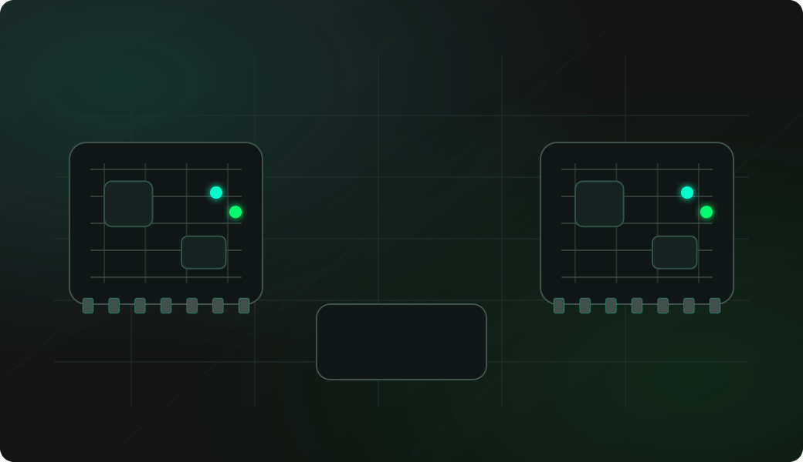

UART baud rate detection
Listen for target serial activity and use the detected rate as a starting point for readable logs or console bridging.
ESP32-S3 UART protocol debugging
ESP32 Bit Pirate turns a compatible ESP32-S3 board into a UART serial console, bridge and traffic inspection workbench. Use it to detect baud rates, bridge target consoles, inspect raw bytes and debug half-duplex links.

Start by making the serial link observable. Once the target speaks, choose the recipe for bridging, sniffing, raw bytes, AT commands or half-duplex work.
Connect GND first, then identify the target TX and RX pads.
Confirm the target voltage level before connecting ESP32 GPIO.
Start UART mode on ESP32 Bit Pirate.
Use autobaud or configure baud rate, data bits, parity, stop bits and inversion.
Read, sniff, bridge or continue with the recipe that matches the target behavior.
mode uart
autobaud
read
raw
bridgeExample CLI flow. See the UART wiki for exact syntax and firmware-specific options.
Use this overview to choose the right serial workflow before opening a detailed recipe.
Listen for target serial activity and use the detected rate as a starting point for readable logs or console bridging.
Interact with a target console once RX, TX, ground, voltage and serial format are known.
Observe boot logs or device-to-device serial traffic without sending bytes onto the target link.
Inspect binary frames, control bytes, packet headers and checksums when printable text is not enough.
Work with modem-style serial modules where repeated commands, responses and line endings matter.
Use the single-wire serial path when a device shares one line for transmit and receive.
UART debugging is often about discovering what a board is already saying. A small external tool can reveal speed, format, direction and timing before you integrate a target into your own firmware.
Find the baud rate, confirm text output and decide whether the port is a read-only log or an interactive shell.
Use serial logs, boot messages and console bridges to understand a board before flashing, erasing or modifying it.
Sniff first when two devices already talk to each other and you need to avoid disturbing the bus.
These notes are intentionally short. The detailed command references live in the project documentation and firmware repository.
UART needs a shared ground reference. Without it, readable text and reliable input are mostly luck.
ESP32 GPIO is 3.3 V; choose level adaptation before UART tests on 1.8 V or 5 V hardware.
A target TX pin connects to the Bit Pirate RX GPIO. A target RX pin connects to the Bit Pirate TX GPIO.
Baud rate is only one setting. Data bits, parity, stop bits and inverted signaling can all change what you see.
Single-wire buses need HDUART-style handling so the tool does not drive the line while the target is talking.
Start read-only, avoid powering unknown boards blindly and keep write, bridge or spam tests for devices you own or have permission to debug.
Most UART failures come from wiring direction, missing ground, wrong format settings or target consoles that only speak during boot.
Check common ground, target TX to Bit Pirate RX, target power and whether the console only emits data during reset.
Try autobaud, then check data bits, parity, stop bits, inversion and voltage-level mismatch.
Check RX/TX crossing, line endings, console lock state and whether the target accepts input at that boot stage.
Switch to raw hex before assuming the link is broken; many serial protocols are not plain text.
Use the HDUART workflow for shared-wire serial links and avoid driving while the target is transmitting.
UART can be done from most supported boards, but the best choice depends on whether you want a portable console or a flexible bench wiring setup.
Cardputer is the most natural choice when the built-in screen, keyboard and battery matter more than many exposed pins.
ESP32-S3 DevKit is easier for RX/TX/GND wiring, level adapters and repeatable serial fixtures.
These pages are the task-level UART workflows. This overview keeps the protocol-level guidance here, while each recipe covers wiring, commands and troubleshooting in detail.
This page is a protocol overview. Use the site index for the full web experience, or GitHub for source code, firmware documentation and the UART command reference.
Flash a supported ESP32-S3 board before testing UART mode from the browser.
Open Web FlasherOpen the maintained firmware wiki for UART mode commands and behavior.
Open UART command referenceOpen the half-duplex UART wiki for single-wire serial workflows.
Open HDUART command referenceCheck compatible boards and hardware notes before wiring a target console.
Compare supported ESP32-S3 boardsOpen Web Serial for UART commands after the matching firmware is running.
Open Web Serial Terminal for ESP32 Bit PirateBrowse recipes that connect UART work to wiring, commands, captures and troubleshooting.
Browse all hardware debugging recipesCheck firmware source, issues and releases that affect UART support.
Open GitHub repositoryShort answers for common questions before moving into a detailed workflow.
Yes. ESP32 Bit Pirate can listen for serial activity with autobaud and use the detected rate as a starting point for reading or bridging a target console.
Yes. After RX, TX, ground, voltage and serial format are known, bridge mode lets your terminal interact with the target UART.
Yes. Use a read-only sniffing workflow when you need to observe serial traffic between two boards without injecting bytes.